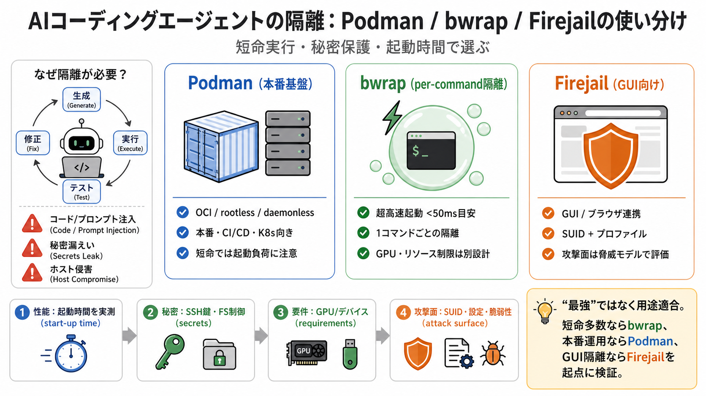

Docker alternatives for AI agents: Podman, bwrap and Firejail
bubblewrap-ai — Runs Claude, Gemini, Goose in a bwrap sandbox. sandbox-bwrap-nix — Allows to run Opencode or other AI h…

AIエージェントの隔離
Podman / bwrap（bubblewrap）/ Firejailを、短命実行・秘密保護・起動時間の観点で“使い分け”るための整理。
危険な自動実行
AIコーディングエージェントは「生成→実行→テスト→修正」を回すため、バグだけでなく悪用も起き得る。
だから隔離は“強さ”だけでなく、起動時間とホスト保護の思想まで含めて設計する必要がある。
大量起動の現実
エージェントは“長時間稼働のサーバ”ではなく、“短命コマンドを多数”起動する。
そのため、数秒級の起動待ちが積み重なって安全運用コストを押し上げる。
比較は“目的別”
3ツールは“解決する問題”が違う。
よって「全部を同じ基準で最強比較」ではなく、運用形態に合わせて層分けする。
選定観点
隔離は「強さ」だけでなく、セットアップ、性能、攻撃面、計算資源の扱いも同時に見る。
特にAIエージェントでは、起動時間と秘密保護が優先度高い。
Podmanの得意
PodmanはDocker互換のOCI準拠で、daemonlessかつrootlessを前提にした運用向き。
本番・マルチテナント・Kubernetes連携の流れを作りやすい。
bwrapの強み
bwrapはユーザ名前空間中心で、起動が非常に速い（50ms未満の目安）。
1コマンドごとの隔離に向き、短命実行の回転に合う。
Firejailの位置
FirejailはSUID付きで設定しやすく、ブラウザやデスクトップアプリの隔離に現実的。
ただしSUIDの特性上、bwrapより攻撃面が大きくなり得るため用途判断が要る。
同じ比較軸で
“何を守りたいか”と“どの運用で回すか”で最適が変わる。
3つの目的別マップを、そのまま判断材料にする。
導入の勘所
比較は出発点で、最終判断は自環境での検証が前提。
起動時間分布、隔離設定例、攻撃シナリオ、GPU手順の成熟度を揃えて確かめる。
FAQの核
Dockerが必ずしも最適でない理由は、短命プロセスの大量起動で起動遅延が効くこと、そして秘密隔離が中心課題になること。
またbwrapの速さは強みだが、組み込み制限やGPU周りは別途揃える必要がある。
不足情報の指針
入力は概要中心のため、定量ベンチや同等条件での比較が不足している。
“攻撃面”もLOC（行数）だけで安全性を断定できないため、検証が必須になる。
最終判断
本番基盤はPodman、ローカルの1コマンド隔離はbwrap、GUI/ブラウザ連携はFirejailが“まずの候補”。
さらに強い隔離が必要なら、マイクロVM（例：Firecracker）へ段階を上げる。
参照のための手がかり
最終評価は公式の隔離設定・セキュリティ方針・既知制約を突き合わせ、脅威モデルに沿って自分で検証する。
下は検索の起点（キーワード）として使える項目。
bubblewrap-ai — Runs Claude, Gemini, Goose in a bwrap sandbox. sandbox-bwrap-nix — Allows to run Opencode or other AI h…
sacrificed. I might switch to LXC to reduce the weight somewhat (easy with incus) but this requires providing a more lim…
What this means for you: SRT is great for simple agent isolation - restricting filesystem and network access for agents …
``` const BACKEND_RESTRICTIVENESS: Record< Backend, number> ={none: 0, "sandbox-exec ": 1, namespace: 1, bwrap: 2, gviso…
bubblewrap is more flexible and works without root. jai is more opinionated and requires far less ceremony for the commo…